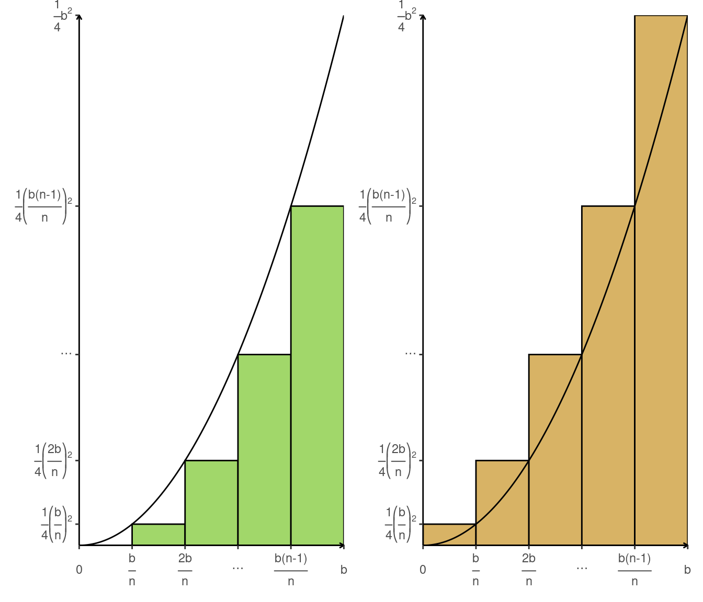
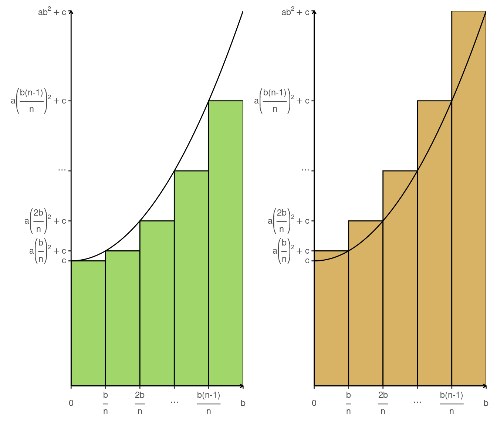
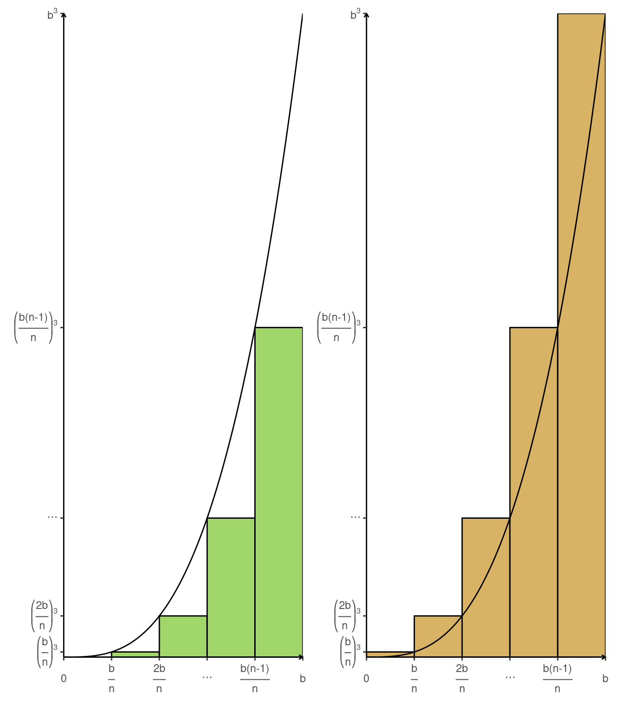

1 Introduction
1.1 Historical Introduction
1.1.1 Exercises I 1.4
1.a Modify the region in Figure I.3 by assuming that the ordinate at each \(x\) is \(2x^2\) instead of \(x^2\). Draw the new figure. Check through the principal steps in the foregoing section and find what effect this has on the calculation of the area.
First we need to calculate the area of each rectangle:
\[\frac{b}{n} \mathbf{2}\left[\frac{kb}{n}\right]^2 = \mathbf{2}\frac{k^2b^3}{n^3}\]
Second we need to calculate \(s_n\)
\[\begin{split} s_n & = \sum_{k=1}^{n-1} \mathbf{2}\frac{k^2b^3}{n^3} \\ & = \mathbf{2}\frac{b^3}{n^3} \sum_{k=1}^{n-1} k^2 \\ & = \mathbf{2}\frac{b^3}{n^3} \left[\frac{n^3}{3} - \frac{n^2}{2} + \frac{n}{6} \right] \end{split}\]
Third we need to calculate \(S_n\)
\[\begin{split} S_n & = \sum_{k=1}^{n} \mathbf{2}\frac{k^2b^3}{n^3} \\ & = \mathbf{2}\frac{b^3}{n^3} \sum_{k=1}^{n} k^2 \\ & = \mathbf{2}\frac{b^3}{n^3} \left[\frac{n^3}{3} + \frac{n^2}{2} + \frac{n}{6} \right] \end{split}\]
Fourth we use the following inequalities where \(n \geq 1\)
\[\begin{split} \frac{n^3}{3} - \frac{n^2}{2} + \frac{n}{6} & < \frac{n^3}{3} & < \frac{n^3}{3} + \frac{n^2}{2} + \frac{n}{6} \\ \mathbf{2}\frac{b^3}{n^3} \left[\frac{n^3}{3} - \frac{n^2}{2} + \frac{n}{6}\right] & < \mathbf{2}\frac{b^3}{3} & < \mathbf{2}\frac{b^3}{n^3} \left[\frac{n^3}{3} + \frac{n^2}{2} + \frac{n}{6}\right] \\ s_n & < \mathbf{2}\frac{b^3}{3} & < S_n \end{split}\]
Fifth we assume that there is some \(A\) such that \(s_n < A < S_n\) and prove that \(A = \mathbf{2}\frac{b^3}{3}\) using the following inequalities: \(\frac{n^3}{3} - \frac{n^2}{2} + \frac{n}{6} < \frac{n^3}{3}\) and \(\frac{n^3}{3} < \frac{n^3}{3} + \frac{n^2}{2} + \frac{n}{6}\)
\[\begin{split} \frac{n^3}{3} - \frac{n^2}{2} + \frac{n}{6} < \frac{n^3}{3} & \iff \frac{n^3}{3} + \frac{n^2}{2} + \frac{n}{6} < \frac{n^3}{3} + n^2 \\ & \iff \mathbf{2}\frac{b^3}{n^3}\left[\frac{n^3}{3} + \frac{n^2}{2} + \frac{n}{6}\right] < \mathbf{2}\frac{b^3}{n^3}\left[\frac{n^3}{3} + n^2\right] \\ & \iff S_n < \mathbf{2}\left[\frac{b^3}{3} + \frac{b^3}{n}\right] \end{split}\]
\[\begin{split} \frac{n^3}{3} < \frac{n^3}{3} + \frac{n^2}{2} + \frac{n}{6} & \iff \frac{n^3}{3} - n^2 < \frac{n^3}{3} - \frac{n^2}{2} + \frac{n}{6} \\ & \iff \mathbf{2}\frac{b^3}{n^3}\left[\frac{n^3}{3} - n^2\right] < \mathbf{2}\frac{b^3}{n^3}\left[\frac{n^3}{3} - \frac{n^2}{2} + \frac{n}{6}\right] \\ & \iff \mathbf{2}\left[\frac{b^3}{3} - \frac{b^3}{n}\right] < s_n \\ \end{split}\]
Therefore we have also that \(\mathbf{2}\left[\frac{b^3}{3} - \frac{b^3}{n}\right] < A < \mathbf{2}\left[\frac{b^3}{3} + \frac{b^3}{n}\right]\). If \(A > \mathbf{2}\frac{b^3}{3}\) then \(A - \mathbf{2}\frac{b^3}{3} > 0\) so using \(A < \mathbf{2}\left[\frac{b^3}{3} + \frac{b^3}{n}\right]\) we can conclude that \(n < \frac{\mathbf{2}b^3}{A - \mathbf{2}\frac{b^3}{3}}\) but \(n \geq 1\) so there are some values of \(n\) where \(n < \frac{\mathbf{2}b^3}{A - \mathbf{2}\frac{b^3}{3}}\) is false. If \(A < \mathbf{2}\frac{b^3}{3}\) then \(0 < \mathbf{2}\frac{b^3}{3} - A\) so using \(\mathbf{2}\left[\frac{b^3}{3} - \frac{b^3}{n}\right] < A\) we can also conclude that \(n < \frac{\mathbf{2}b^3}{\mathbf{2}\frac{b^3}{3} - A}\) and again this is false. The only possibility is that \(A = \mathbf{2}\frac{b^3}{3}\) so there is a unique value \(A\) such that \(s_n < A < S_n\).
1.b Do the same if the ordinate at each \(x\) is \(3x^2\)
The process is similar as in 1.a where we only need to change \(\mathbf{2}\) with \(\mathbf{3}\).
1.c Do the same if the ordinate at each \(x\) is \(\frac{1}{4}x^2\)

The process is similar as in 1.a where you only need to change \(\mathbf{2}\) with \(\mathbf{\frac{1}{4}}\).
1.d Do the same if the ordinate at each \(x\) is \(2x^2 + 1\)
First we need to calculate the area of each rectangle:
\[\frac{b}{n} \left[\mathbf{2}\left[\frac{kb}{n}\right]^2 + \mathbf{1}\right] = \mathbf{2}\frac{k^2b^3}{n^3} + \mathbf{1}\frac{b}{n}\]
Second we need to calculate \(s_n\)
\[\begin{split} s_n & = \sum_{k=1}^{n-1} \left[\mathbf{2}\frac{k^2b^3}{n^3} + \mathbf{1}\frac{b}{n}\right] \\ & = \mathbf{2}\frac{b^3}{n^3} \sum_{k=1}^{n-1} k^2 + \mathbf{1}\frac{b(n-1)}{n} \\ & = \mathbf{2}\frac{b^3}{n^3} \left[\frac{n^3}{3} - \frac{n^2}{2} + \frac{n}{6} \right] + \mathbf{1}\frac{b(n-1)}{n} \end{split}\]
Third we need to calculate \(S_n\)
\[\begin{split} S_n & = \sum_{k=1}^{n} \left[\mathbf{2}\frac{k^2b^3}{n^3} + \mathbf{1}\frac{b}{n}\right] \\ & = \mathbf{2}\frac{b^3}{n^3} \sum_{k=1}^{n} k^2 + \mathbf{1}b \\ & = \mathbf{2}\frac{b^3}{n^3} \left[\frac{n^3}{3} + \frac{n^2}{2} + \frac{n}{6} \right] + \mathbf{1}b \end{split}\]
Fourth we use the following inequalities where \(n \geq 1\)
\[\begin{split} \frac{n^3}{3} - \frac{n^2}{2} + \frac{n}{6} & < \frac{n^3}{3} < \frac{n^3}{3} + \frac{n^2}{2} + \frac{n}{6} \\ \mathbf{2}\frac{b^3}{n^3} \left[\frac{n^3}{3} - \frac{n^2}{2} + \frac{n}{6}\right] + \mathbf{1}b & < \mathbf{2}\frac{b^3}{3} + \mathbf{1}b < \mathbf{2}\frac{b^3}{n^3} \left[\frac{n^3}{3} + \frac{n^2}{2} + \frac{n}{6}\right] + \mathbf{1}b \\ \mathbf{2}\frac{b^3}{n^3} \left[\frac{n^3}{3} - \frac{n^2}{2} + \frac{n}{6}\right] + \mathbf{1}\frac{b(n-1)}{n} & < \mathbf{2}\frac{b^3}{3} + \mathbf{1}b < \mathbf{2}\frac{b^3}{n^3} \left[\frac{n^3}{3} + \frac{n^2}{2} + \frac{n}{6}\right] + \mathbf{1}b s_n & < \mathbf{2}\frac{b^3}{3} + \mathbf{1}b < S_n \end{split}\]
Fifth we assume that there is some \(A\) such that \(s_n < A < S_n\) and prove that \(A = \mathbf{2}\frac{b^3}{3} + \mathbf{1}b\) using the following inequalities: \(\frac{n^3}{3} - \frac{n^2}{2} + \frac{n}{6} < \frac{n^3}{3}\) and \(\frac{n^3}{3} < \frac{n^3}{3} + \frac{n^2}{2} + \frac{n}{6}\)
\[\begin{split} \frac{n^3}{3} - \frac{n^2}{2} + \frac{n}{6} < \frac{n^3}{3} & \iff \frac{n^3}{3} + \frac{n^2}{2} + \frac{n}{6} < \frac{n^3}{3} + n^2 \\ & \iff \mathbf{2}\frac{b^3}{n^3}\left[\frac{n^3}{3} + \frac{n^2}{2} + \frac{n}{6}\right] + \mathbf{1}b < \mathbf{2}\frac{b^3}{n^3}\left[\frac{n^3}{3} + n^2\right] + \mathbf{1}b \\ & \iff S_n < \mathbf{2}\left[\frac{b^3}{3} + \frac{b^3}{n}\right] + \mathbf{1}b \end{split}\]
\[\begin{split} \frac{n^3}{3} < \frac{n^3}{3} + \frac{n^2}{2} + \frac{n}{6} & \iff \frac{n^3}{3} - n^2 < \frac{n^3}{3} - \frac{n^2}{2} + \frac{n}{6} \\ & \iff \mathbf{2}\frac{b^3}{n^3}\left[\frac{n^3}{3} - n^2\right] + \mathbf{1}b < \mathbf{2}\frac{b^3}{n^3}\left[\frac{n^3}{3} - \frac{n^2}{2} + \frac{n}{6}\right] + \mathbf{1}b \\ & \iff \mathbf{2}\left[\frac{b^3}{3} - \frac{b^3}{n}\right] + \mathbf{1}b < s_n \\ \end{split}\]
Therefore we have also that \(\mathbf{2}\left[\frac{b^3}{3} - \frac{b^3}{n}\right] + \mathbf{1}b < A < \mathbf{2}\left[\frac{b^3}{3} + \frac{b^3}{n}\right] + \mathbf{1}b\). If \(A > \mathbf{2}\frac{b^3}{3} + \mathbf{1}b\) then \(A - \mathbf{2}\frac{b^3}{3} - \mathbf{1}b > 0\) so using \(A < \mathbf{2}\left[\frac{b^3}{3} + \frac{b^3}{n}\right] + \mathbf{1}b\) we can conclude that \(n < \frac{\mathbf{2}b^3}{A - \mathbf{2}\frac{b^3}{3} - \mathbf{1}b}\) but \(n \geq 1\) so there are some values of \(n\) where \(n < \frac{\mathbf{2}b^3}{A - \mathbf{2}\frac{b^3}{3} - \mathbf{1}b}\) is false. If \(A < \mathbf{2}\frac{b^3}{3} + \mathbf{1}b\) then \(0 < \mathbf{2}\frac{b^3}{3} + \mathbf{1}b - A\) so using \(\mathbf{2}\left[\frac{b^3}{3} - \frac{b^3}{n}\right] + \mathbf{1}b < A\) we can also conclude that \(n < \frac{\mathbf{2}b^3}{\mathbf{2}\frac{b^3}{3} + \mathbf{1}b - A}\) and again this is false. The only possibility is that \(A = \mathbf{2}\frac{b^3}{3} + \mathbf{1}b\) so there is a unique value \(A\) such that \(s_n < A < S_n\).
1.e Do the same if the ordinate at each \(x\) is \(ax^2 + c\)
In this part we are going to assume that \(a > 0\) and \(c > 0\). If \(a = 0\) then it is not possible to calculate the area of the rectangles and if \(a < 0\) we would need to define the concept of a negative area. Also if \(c = 0\) it is a case we already cover and if \(c < 0\) we would need again to define the concept of a negative area.

The process is similar as in 1.d where we only need to change \(\mathbf{2}\) with \(\mathbf{a}\) and \(\mathbf{1}\) with \(\mathbf{c}\).
2 Modify the region in Figure I.3 by assuming that the ordinate at each \(x\) is \(x^3\) instead of \(x^2\). Draw a new figure.

2a Use a construction similar to that illustrated in Figure I.3 and show that the outer and inner sums \(S_n\) and \(s_n\) are given by
\[S_n = \frac{b^4}{n^4}\left[1^3 + 2^3 + \cdots + n^3\right] \; , \; s_n = \frac{b^4}{n^4}\left[1^3 + 2^3 + \cdots + (n-1)^3\right]\]
First we need to calculate the area of each rectangle:
\[\frac{b}{n} \left[\frac{kb}{n}\right]^3 = \frac{k^3b^4}{n^4}\]
Second we need to calculate \(s_n\)
\[\begin{split} s_n & = \sum_{k=1}^{n-1} \frac{k^3b^4}{n^4} \\ & = \frac{b^4}{n^4} \sum_{k=1}^{n-1} k^3 \end{split}\]
Third we need to calculate \(S_n\)
\[\begin{split} S_n & = \sum_{k=1}^{n} \frac{k^3b^4}{n^4} \\ & = \frac{b^4}{n^4} \sum_{k=1}^{n} k^3 \end{split}\]
2b Use the inequalities (which can be proved by mathematical induction; see Section I4.2)
\[1^3 + 2^3 + \cdots + (n-1)^3 < \frac{n^4}{4} < 1^3 + 2^3 + \cdots + n^3\]
to show that \(s_n < \frac{b^4}{4} < S_n\) for every \(n\), and prove that \(\frac{b^4}{4}\) is the only number which lies between \(s_n\) and \(S_n\) for every \(n\)
First we use the following inequality where \(n \geq 1\)
\[\begin{split} 1^3 + 2^3 + \cdots + (n-1)^3 & < \frac{n^4}{4} & < 1^3 + 2^3 + \cdots + n^3 \\ \frac{b^4}{n^4} \sum_{k=1}^{n-1} k^3 & < \frac{b^4}{4} & < \frac{b^4}{n^4} \sum_{k=1}^{n} k^3 \\ s_n & < \frac{b^4}{4} & < S_n \end{split}\]
Second we assume that there is some \(A\) such that \(s_n < A < S_n\) and prove that \(A = \frac{b^4}{4}\) using the following inequalities: \(s_n < \frac{b^4}{4}\) and \(\frac{b^4}{4} < S_n\)
If \(A > \frac{b^4}{4}\) and \(s_n < \frac{b^4}{4}\) then \(S_n > \frac{b^4}{4}\) and \(0 < \frac{b^4}{4} - s_n\). Therefore because \(S_n - s_n > \frac{b^4}{4} - s_n\) this implies that \(\frac{b^4}{\frac{b^4}{4} - s_n} > n\) but \(n \geq 1\) so there are some values of \(n\) where \(\frac{b^4}{\frac{b^4}{4} - s_n} > n\) is false.
If \(A < \frac{b^4}{4}\) and \(\frac{b^4}{4} < S_n\) then \(\frac{b^4}{4} > s_n\) and \(0 < S_n - \frac{b^4}{4}\). Therefore because \(S_n - \frac{b^4}{4} < S_n - s_n\) this implies that \(n < \frac{b^4}{S_n - \frac{b^4}{4}}\) but \(n \geq 1\) so there are some values of \(n\) where \(n < \frac{b^4}{S_n - \frac{b^4}{4}}\) is false.
2c What numbers takes the place of \(\frac{b^4}{4}\) if the ordinate at each \(x\) is \(ax^3 + c\)?
The process to answer this question is similar to the answer in 2b and 2a
First we need to calculate the area of each rectangle:
\[\frac{b}{n} \left[ a\left[\frac{kb}{n}\right]^{\mathbf{3}} + c\right] = a\frac{k^{\mathbf{3}}b^{\mathbf{4}}}{n^{\mathbf{4}}} + c \frac{b}{n}\]
Second we need to calculate \(s_n\)
\[\begin{split} s_n & = \sum_{k=1}^{n-1} \left[a\frac{k^{\mathbf{3}}b^{\mathbf{4}}}{n^{\mathbf{4}}} + c \frac{b}{n}\right] \\ & = a\frac{b^{\mathbf{4}}}{n^{\mathbf{4}}} \sum_{k=1}^{n-1} k^{\mathbf{3}} + c\frac{b(n-1)}{n} \end{split}\]
Third we need to calculate \(S_n\)
\[\begin{split} S_n & = \sum_{k=1}^{n} \left[a\frac{k^{\mathbf{3}}b^{\mathbf{4}}}{n^{\mathbf{4}}} + c \frac{b}{n}\right] \\ & = a\frac{b^{\mathbf{4}}}{n^{\mathbf{4}}} \sum_{k=1}^{n} k^{\mathbf{3}} + cb \end{split}\]
Fourth we use the following inequality where \(n \geq 1\)
\[\begin{split} 1^{\mathbf{3}} + 2^{\mathbf{3}} + \cdots + (n-1)^{\mathbf{3}} & < \frac{n^{\mathbf{4}}}{{\mathbf{4}}} < 1^{\mathbf{3}} + 2^{\mathbf{3}} + \cdots + n^{\mathbf{3}} \\ a\frac{b^{\mathbf{4}}}{n^{\mathbf{4}}} \sum_{k=1}^{n-1} k^{\mathbf{3}} + cb < a\frac{b^{\mathbf{4}}}{{\mathbf{4}}} + cb & < a\frac{b^{\mathbf{4}}}{n^{\mathbf{4}}} \sum_{k=1}^{n} k^{\mathbf{3}} + cb \\ a\frac{b^{\mathbf{4}}}{n^{\mathbf{4}}} \sum_{k=1}^{n-1} k^{\mathbf{3}} + c\frac{b(n-1)}{n} & < a\frac{b^{\mathbf{4}}}{{\mathbf{4}}} + cb < a\frac{b^{\mathbf{4}}}{n^{\mathbf{4}}} \sum_{k=1}^{n} k^{\mathbf{3}} + cb \\ s_n & < a\frac{b^{\mathbf{4}}}{{\mathbf{4}}} + cb < S_n \end{split}\]
Sixth we assume that there is some \(A\) such that \(s_n < A < S_n\) and prove that \(A = a\frac{b^{\mathbf{4}}}{{\mathbf{4}}} + cb\) using the following inequalities: \(s_n < a\frac{b^{\mathbf{4}}}{{\mathbf{4}}} + cb\) and \(a\frac{b^{\mathbf{4}}}{{\mathbf{4}}} + cb < S_n\)
If \(A > a\frac{b^{\mathbf{4}}}{{\mathbf{4}}} + cb\) and \(s_n < a\frac{b^{\mathbf{4}}}{{\mathbf{4}}} + cb\) then \(S_n > a\frac{b^{\mathbf{4}}}{{\mathbf{4}}} + cb\) and \(0 < a\frac{b^{\mathbf{4}}}{{\mathbf{4}}} + cb - s_n\). Therefore because \(S_n - s_n > a\frac{b^{\mathbf{4}}}{{\mathbf{4}}} + cb - s_n\) this implies that \(\frac{ab^{\mathbf{4}} + cb}{a\frac{b^{\mathbf{4}}}{{\mathbf{4}}} + cb - s_n} > n\) but \(n \geq 1\) so there are some values of \(n\) where \(\frac{ab^{\mathbf{4}} + cb}{a\frac{b^{\mathbf{4}}}{{\mathbf{4}}} + cb - s_n} > n\) is false.
If \(A < a\frac{b^{\mathbf{4}}}{{\mathbf{4}}} + cb\) and \(a\frac{b^{\mathbf{4}}}{{\mathbf{4}}} + cb < S_n\) then \(a\frac{b^{\mathbf{4}}}{{\mathbf{4}}} + cb > s_n\) and \(0 < S_n - a\frac{b^{\mathbf{4}}}{{\mathbf{4}}} - cb\). Therefore because \(S_n - a\frac{b^{\mathbf{4}}}{{\mathbf{4}}} - cb < S_n - s_n\) this implies that \(n < \frac{ab^4 + cb}{S_n - a\frac{b^{\mathbf{4}}}{{\mathbf{4}}} - cb}\) but \(n \geq 1\) so there are some values of \(n\) where \(n < \frac{ab^{\mathbf{4}} + cb}{S_n - a\frac{b^{\mathbf{4}}}{{\mathbf{4}}} - cb}\) is false.
3 The inequalities (I.5) and (I.12) are special cases of the more general inequalities
\[1^{\mathbf{m}} + 2^{\mathbf{m}} + \cdots + (n-1)^{\mathbf{m}} < \frac{n^{\mathbf{m + 1}}}{\mathbf{m + 1}} < 1^{\mathbf{m}} + 2^{\mathbf{m}} + \cdots + n^{\mathbf{m}}\]
that are valid for every integer \(n \geq 1\) and every integer \({\mathbf{m}} \geq 1\). Asumme the validity of (I.13) and generalize the results of Exercise 2.
We can generalize this result to \(ax^{\mathbf{m}} + c\) where the process is similar as in 2.c. We only need to change \(\mathbf{3}\) with \(\mathbf{m}\) and \(\mathbf{4}\) with \(\mathbf{m + 1}\).
1.2 Some Basic Concepts of the Theory of Sets
1.2.1 Exercises I 2.5
1 Use the roster notation to designate the following sets of real numbers.
\[A = \{x | x^2 - 1 = 0 \} = \{-1, 1 \}\]